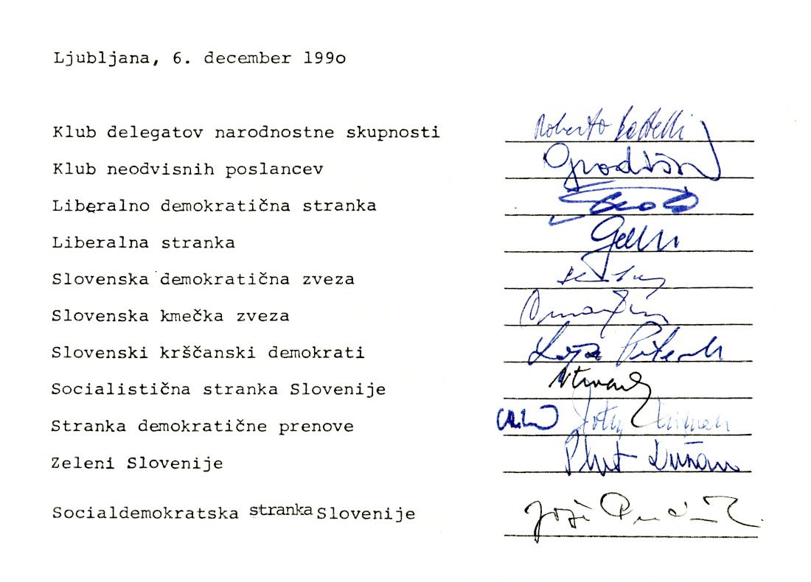

1
OBDOBJE
PRED
PLEBISCITOM
STOPILI
SMO
SKUPAJ

Enotnost političnih strank in poslanskih
Enotnost političnih strank in poslanskih
skupin Skupščine Republike Slovenije
Delegati so na seji Skupščine Republike Slovenije 6. decembra 1990 sprejeli Zakon o plebiscitu o samostojnosti in neodvisnosti Republike Slovenije. Takrat je bila podana tudi Izjava o dobrih namenih, v kateri je bilo poudarjeno, da vzpostavitev samostojne države ni usmerjena zoper nikogar v Jugoslaviji niti zunaj nje ter da enako pravico priznava tudi drugim narodom v Jugoslaviji. Neposredno pred sejo skupščine pa so prvaki strank podpisali sporazum, s katerim so se zavezali k skupnemu prizadevanju za uspeh plebiscita in k temu, da si zaslug zanj ne bo lastila nobena stranka.
Content
Two
Two
NI NAS
BILO
STRAH ...
Nacionalna varnost v času plebiscita
Obdobje pred in po ter seveda v času samega glasovanja na plebiscitu je bilo s stališča varnosti zelo problematično. Mednacionalni spori v Jugoslaviji so v določeni meri odsevali tudi v slovenskem prostoru in ustvarjali napetosti med pripadniki različnih narodov in narodnosti. Posledično ni bilo mogoče izključiti akcij posameznikov ali skupin, ki bi želeli fizično motiti izvedbo plebiscita oziroma bi sovražno delovali po plebiscitu. Za preprečitev le-tega so morali organi za notranje zadeve v okviru rednih zadolžitev in spremljanja varnostnih razmer še posebej budno opravljati nekatere specifične naloge.
Content
Top
Two
Three
has
extra
text
has
extra
text